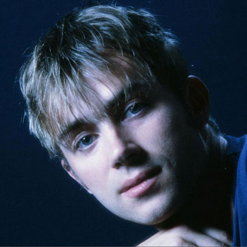
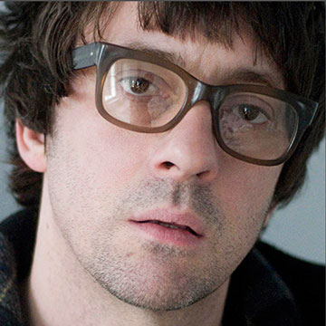
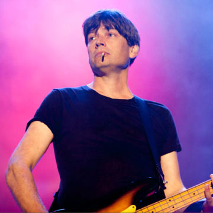
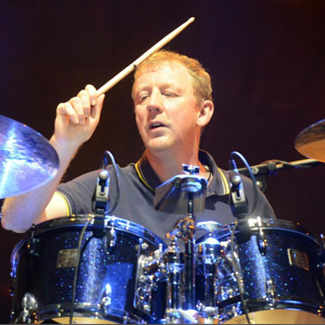

|  | Damon Albarn OBESinger(born 23 March 1968) is an English-Icelandic musician, singer-songwriter and composer. |
|  | Graham Leslie CoxonGuitarist(born 12 March 1969) is an English musician, singer-songwriter, multi-instrumentalist and painter. |
|  | Steven Alexander James, FRSABassist(born 21 November 1968) is an English musician. |
|  | David Alexander De Horne RowntreeDrummer(born 8 May 1964)[1] is an English musician, politician, solicitor, composer and animator. |